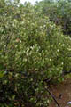
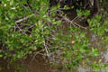
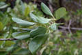
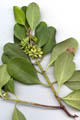
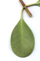
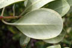
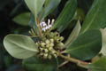
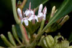
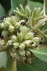
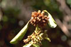
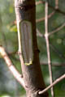
Diagnostic characters
Botany & morphology
Regeneration
Reproductive biology
Ecology
Distribution
Uses
Small trees or shrub to 3 m tall. Stipule interpetiolar. Flowers white; fruits drupe.
Leaves simple, opposite, decussate, stipules interpetiolar, petiole 1 – 2 cm, oblong-ovate, apex rounded to bluntly pointed or slightly emarginate, base acute, 4 - 9 x 2 – 5 cm, glabrous, somewhat fleshy or coriaceous.
Inflorescence dense axillary condensed cymes.
Flowers small, white, bisexual, regular, tetramerous, pedicellate; calyx tube elongate, 4-5 toothed; corolla tube cylindric, 4 - 5 lobed, oblong; stamens 4 - 5 between the corolla - lobes, anther liner - sagittate; ovary 2 - celled.
Fruit drupe, green, subcylindric, 8 - 10 grooved with 2 crustaceous connate pyrenes; seeds subcylindric.
Branchlets stout, swollen at the nodes.
Tree architecture shows Attims’s model.
Fruit turns brown at maturity; it floats because of the spongy layers of the inner fruit. Germination hypogeal.
Pollination by short-tongued insects.
Uncommon constituent of mangroves, in coastal sites including beaches.
Indochina and Hainan, through the Malay Archipelago and Philippines to tropical Australia, northward to the Solomon Islands and Palau. East coast of Indian peninsula and Andaman Islands, Puttalam in south western part of Sri Lanka, New Caledonia.
Dark brown wood is very hard and useful for making small objects. A warm extract of the leaves is supposedly helpful for stomachaches.
Top of the page